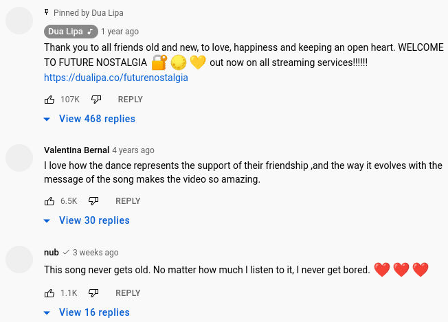

| Ник | Пост | Дата |
|---|---|---|
| ValdikSS | 02.03.2022 наблюдается блокировка домена Сервис ping-admin показывает доступность сервиса в целом (на серверных и транзитных каналах ТСПУ почти не встречается). Соединение с провайдеров ОБИТ, Ростелеком, МТС и Tele2 (все с ТСПУ) не получают положительный ответ на HTTP и HTTPS-запросы до этого домена, причём с другими доменами при запросе на этот же адрес проблем не наблюдается. Также блокируются запросы на другие IP-адреса с этим доменом, что подрвеждает наличие фильтра, а не внезапные сетевые проблемы.  | 2022-03-02T15:18:47.851Z |
| ValdikSS | Домен опять доступен. Видимо, из-за запросов о проблеме со стороны Медузы и Интерфакса в Роскомнадзор. | 2022-03-02T16:25:51.725Z |
| Sicness(Anton) | Давайте все же рассуждать логически опираясь на 2 простых факта:
Никакие Российские средства не могут вычленить из запроса доменное имя из-за https (если конечно они не научились хачить его :)). Следственно, это делается на стороне самого гугла а не всякие там российские шпионские технологии. | 2022-03-02T16:30:50.379Z |
| Elevator | Проверял на мегафоне спб, аватарки не грузились | 2022-03-02T16:35:26.467Z |
| ValdikSS | A post was merged into an existing topic: OONI reports of Tor blocking in certain ISPs since 2021-12-01 | 2022-03-02T16:57:56.920Z |
| ValdikSS |
В HTTPS домен передаётся в поле SNI (Server Name Indication). | 2022-03-02T16:40:19.455Z |
| Sicness(Anton) | Не знал, спасибо. | 2022-03-02T18:12:57.127Z |
| wa-Nadoo(VItali) | Encrypted Client Hello в Firefox может позволяет обойти блокировки? | 2022-03-02T20:22:08.311Z |
| ValdikSS | ECH в данный момент не поддерживается условно нигде на серверной стороне. Twitter однозначно его не поддерживает. | 2022-03-02T21:01:50.196Z |
| ValdikSS | Теперь заблокировали официально, через Реестр. | 2022-04-22T11:57:57.790Z |
| vanyaindigo | Я так понимаю, что начали YouTube резать по частям? Потому что ссылки-то в реестре уже давно были, но в выгрузки не попадали. | 2022-04-22T14:00:06.681Z |
| jestxfot(YoutubeNotWork) | Блочится только одна картинка с потерями РФ, плюс эта картинка не грузится в ВК. На самом деле очень грубая блокировка со стороны РКН | 2022-04-23T14:56:52.642Z |
| RuAvatar(Roman) | Сделал Расширение которое возвращает аватарки на Ютуб. | 2022-12-04T08:11:39.325Z |
| yafos66772(Neq1zz) | А какую картинку конкретно забанили? Спустя год до сих пор в бане. Жесть. | 2023-06-22T12:25:04.678Z |
| Elevator | На тему СВО | 2023-06-22T15:16:18.063Z |
| dartraiden(Alexander Gavrilov) |
| 2023-06-23T15:51:10.893Z |
{kind=link}